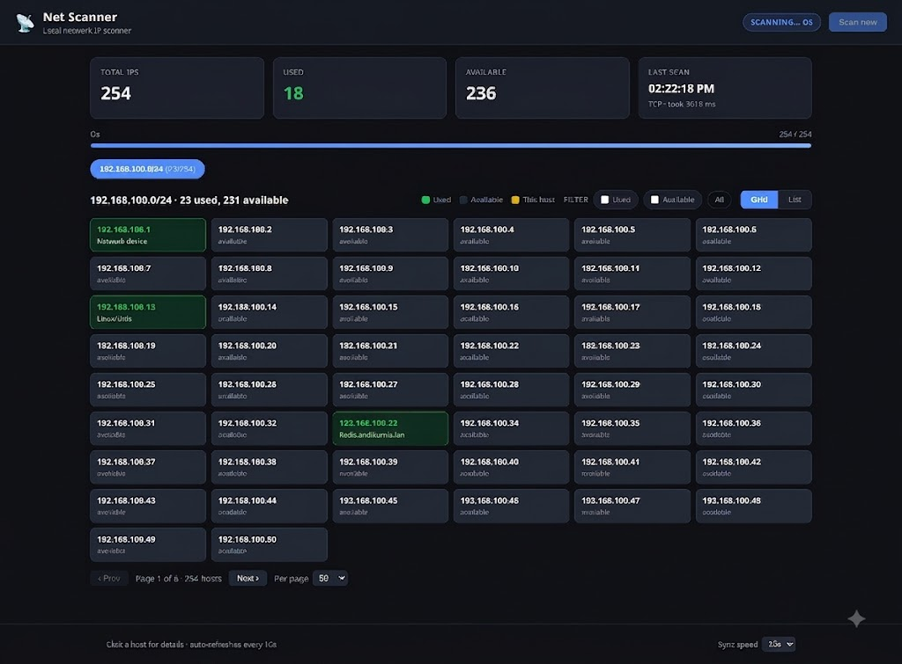

Net Scanner periodically probes every address in your network and shows used vs available IPs in a clean, responsive web UI — with MAC vendors, hostnames and OS fingerprinting.

Everything you need to keep track of your local network.
Every IP is probed and colour-coded. Green means in use, grey is free, yellow marks your own machine.
Click any host to see MAC address, vendor (OUI lookup), reverse-DNS hostname, response time and OS.
Windows, Apple, Linux/Unix, printers and routers are guessed from ICMP TTL plus open TCP ports.
Run with sudo to get instant ARP results with MAC + vendor. Falls back to TCP/ICMP without privileges.
Grid or list view, used/available filters, sortable columns and pagination with configurable page size.
Scan several subnets at once and switch between them with per-subnet tabs in the UI.
Requires a Rust toolchain — install it with rustup.
git clone git@github.com:andikurnia/net-scanner-rust.git cd net-scanner-rust cargo build --release
./target/release/net-scanner
Uses ICMP + TCP probes. Open the web UI at
http://127.0.0.1:8080.
sudo ./target/release/net-scanner
With root / CAP_NET_RAW the scanner uses ARP, giving you MAC addresses and vendors for every used host, and enables the TTL-based OS probe.
A quick tour of the dashboard.
Scans run automatically every 10 seconds. Need a fresh scan right now? Press Scan now in the top bar — or call the API:
curl -X POST http://127.0.0.1:8080/api/scan
Everything lives in config.toml and can be overridden with
CLI flags (e.g. --subnet 10.0.0.0/24,
--interval 15).
All options can be given via CLI flags or config.toml.
| Option | CLI | Default |
|---|---|---|
| Web bind address | --bind 0.0.0.0:8080 | 127.0.0.1:8080 |
| Scan interval | --interval 60 | 10 seconds |
| Scan method | --method auto|arp|tcp | auto |
| Probe timeout | --timeout-ms 500 | 100 ms |
| Concurrency | --concurrency 512 | 256 |
| Subnets | --subnet 10.0.0.0/24 | auto-detect main LAN |
| OS detection | --detect-os false | true |
| Probe ports | ports = [...] | 22, 53, 80, 445, ... |
Your own machine is always counted as used.
The backend exposes a tiny JSON API, handy for scripting and monitoring.
| Method | Path | Description |
|---|---|---|
| GET | / | Web UI |
| GET | /api/state | Current scan results (JSON) |
| POST | /api/scan | Trigger a scan immediately |
| GET | /api/health | Liveness check |
curl http://127.0.0.1:8080/api/state | jq '.subnets[].hosts[] | select(.used) | {ip, os, vendor, hostname}'
Run with sudo, or just run without privileges to use the TCP probe mode.
Pass --subnet <CIDR> explicitly or add subnets = ["192.168.1.0/24"] to config.toml.
Firewalls or AP isolation can block ARP/ping between clients. Those hosts are only detected if they expose a common TCP port.
The host answered no probes we could fingerprint (e.g. it blocks ICMP and all probed ports). Run with sudo for the TTL probe.
If this tool helps you out, consider a small tip.
Donate via PayPal